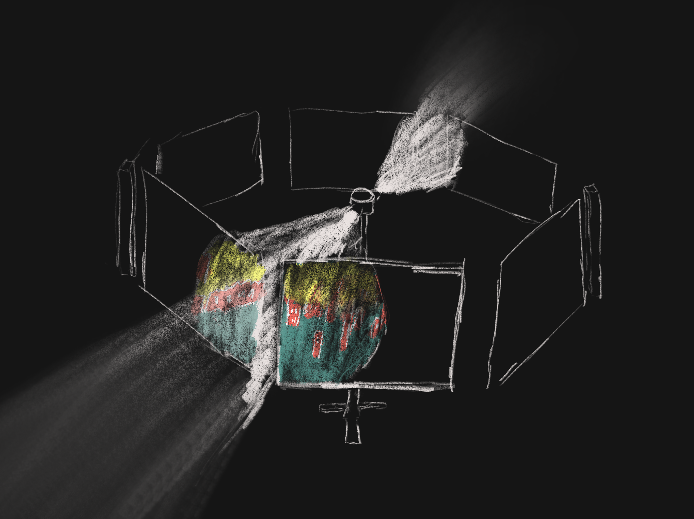

The Last Homely Sever Room
Concept Art and Mood Board
Are.na moodboard link  Concept art depicting spinning spotlights as they sweep across the space, intermittently revealing screen content—searching, illuminating, and fragmenting the narrative.
 Visual explorations of the server room's form and atmosphere—sketching the remnants of a machine's last sanctuary
Visual explorations of the server room's form and atmosphere—sketching the remnants of a machine's last sanctuary